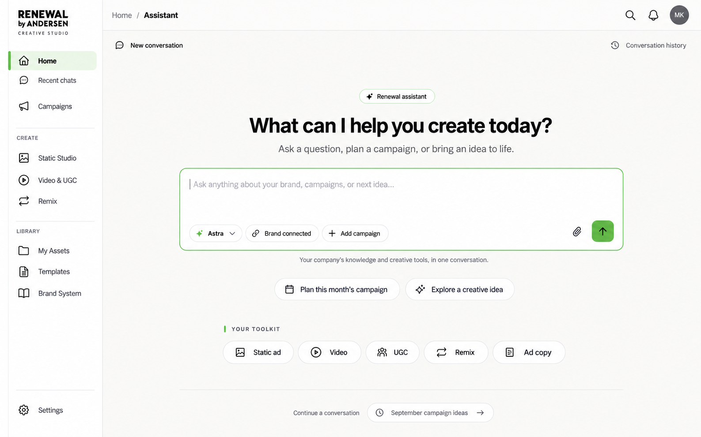

The app feels like theirs.
Each company receives its own logo, colors, type, imagery and workspace identity. A shared platform keeps the experience consistent as we add clients and improve the tools.
Company Campaign Studio · Design direction 07 · Complete campaign workflows
Renewal by Andersen is our first reference: a personally branded workspace for creating static ads, video and UGC. Start with a personal assistant, explore models and shared winning ads, then create in your own brand.
FOLLOW THE WORKFLOW · DESIGN WALKTHROUGH

A simple, Zuops-inspired home built around the company’s personal assistant. Ask questions, plan campaigns, find assets or create through conversation.
Each company receives its own logo, colors, type, imagery and workspace identity. A shared platform keeps the experience consistent as we add clients and improve the tools.
Real company assets, layouts, captions, offer cards and video styles carry across every campaign. Clients can create freely, revise individual elements and download completed work immediately.